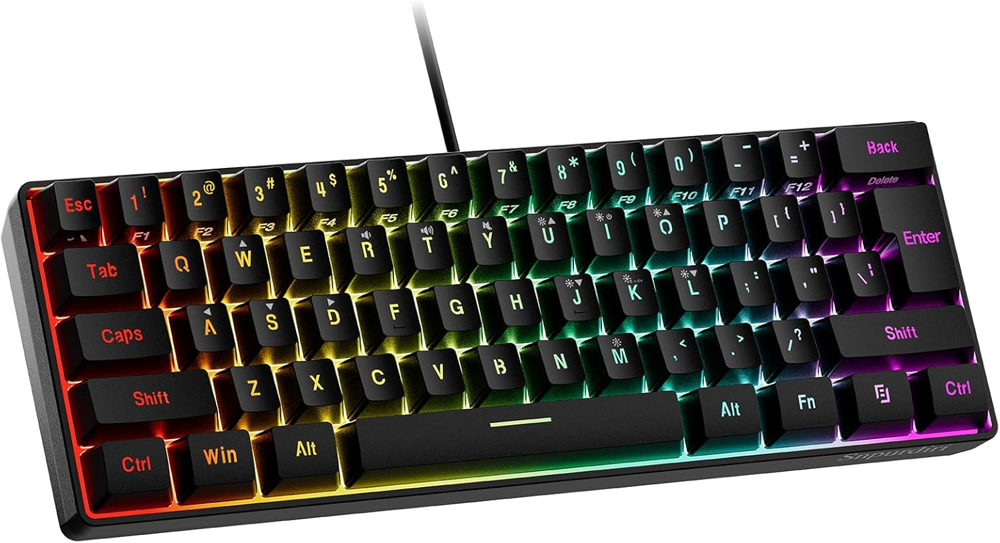

Klawiatura
Opis: Klawiatura to urządzenie wejściowe służące do wprowadzania tekstu i komend. Jej cechy to typ przełączników (mechaniczne, membranowe), układ klawiszy oraz dodatkowe funkcje. Ma wpływ na komfort pisania i pracy. Przykłady to Corsair K70 RGB, Logitech G Pro X czy HyperX Alloy Core.
Ciekawostka: Klawiatury mechaniczne są bardzo popularne wśród graczy. Dawniej klawiatury były znacznie prostsze i mniej ergonomiczne.
